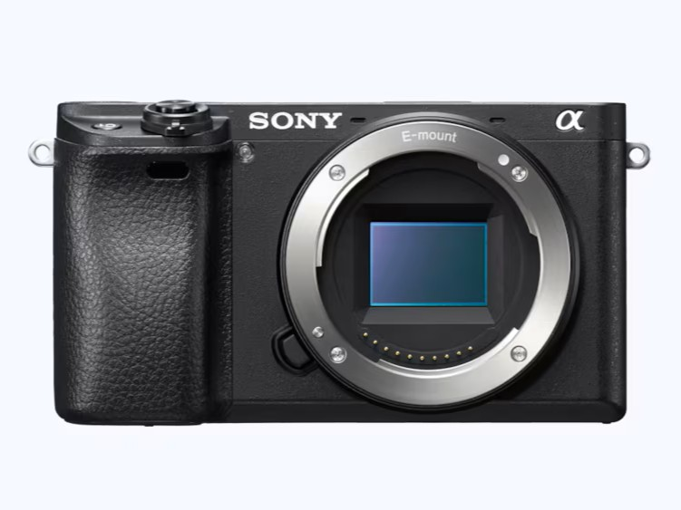
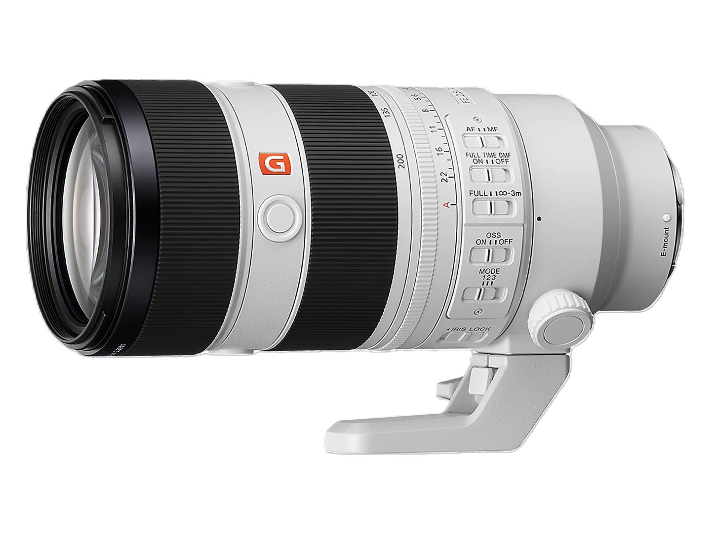
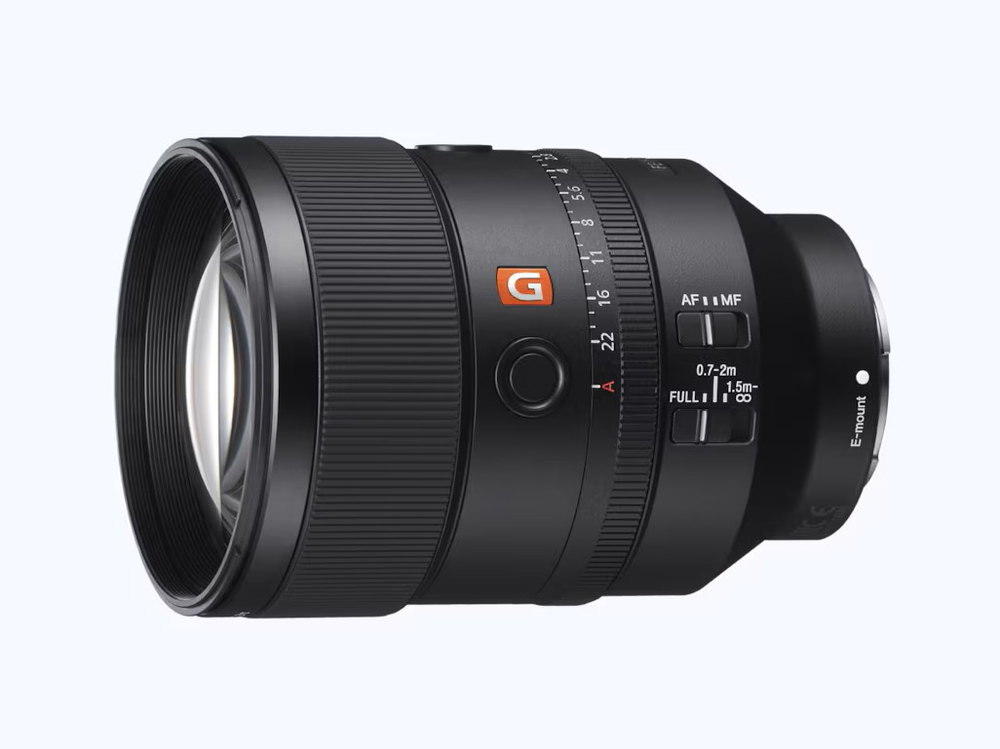
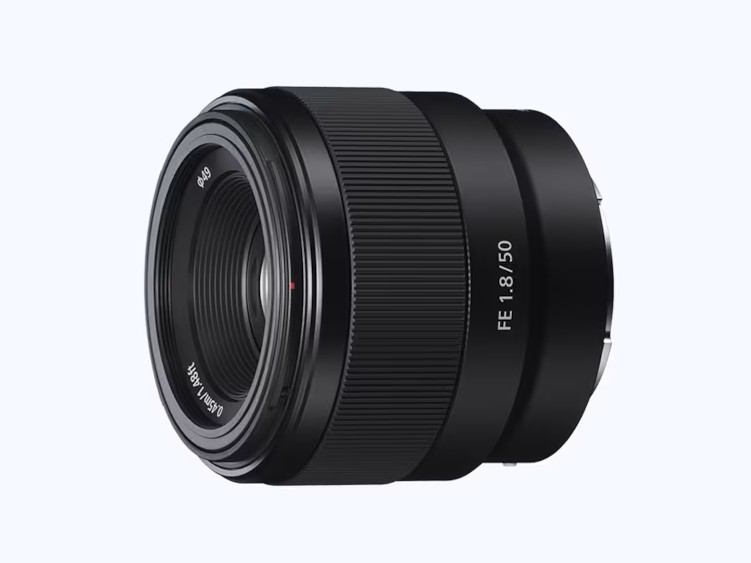
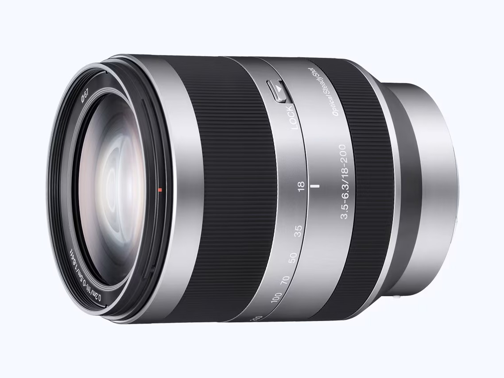
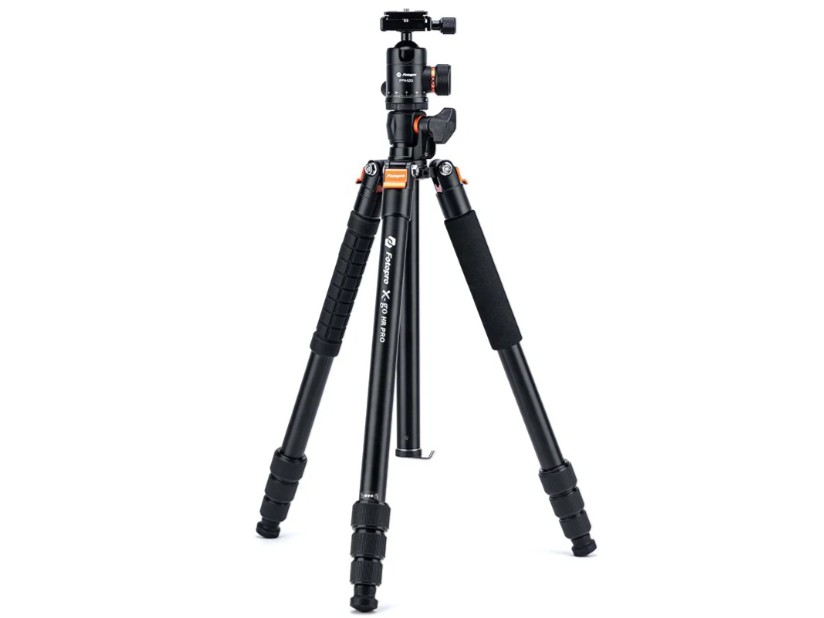

Pridaj fotku techniky
Fotoaparát
Sony α6300
Univerzálne a kompaktné APS-C telo nabité funkciami.
Za objektívom
Volám sa Jakub Šperka, momentálne som študentom denného doktorandského štúdia v odbore geodézia a kartografia. Prednedávnom som sa začal venovať fotografovaniu. Veľmi rýchlo som objavil vášeň v športovej fotografii futbalu. Aj napriek tomu, že stratégii tohto športu veľmi nerozumiem, baví ma zachytávať emócie a vášeň, ktorá je s tým spojená. Táto stránka je mojím fotografickým archívom zápasov a miestom, kde môžem fotografie prezentovať v ucelených galériách.
Pri fotografovaní sa snažím zachytiť nielen samotnú hru, ale aj emócie, súboje, reakcie hráčov, fanúšikov a atmosféru okolo ihriska. Baví ma kombinácia technickej stránky športovej fotografie s hľadaním netradičných kompozícií a krátkych momentov, ktoré počas zápasu ľahko zaniknú.
Výbava
Technika, ktorú momentálne používam pri fotografovaní športu, portrétov, cestovania a ďalších fotografických tém.

Pridaj fotku technikyUniverzálne a kompaktné APS-C telo nabité funkciami.

Pridaj fotku technikyZoomový objektív od Sony, ktorý znalcom netreba predstavovať – rýchly autofocus, konštantná svetelnosť f/2.8 a flexibilný rozsah ohniskových vzdialeností pre dianie na ihrisku aj mimo neho.

Pridaj fotku technikySvetelný teleobjektív s pevným ohniskom, ktorý zabezpečuje maximálnu optickú kvalitu a prináša do hry ten najkrémovejší bokeh pre dych vyrážajúce portréty.

Pridaj fotku technikyKompaktné a lacné svetelné pevné ohnisko vhodné na portréty akéhokoľvek druhu.

Pridaj fotku technikyUniverzálny objektív pre cestovanie a situácie, kde je dôležitý veľký rozsah ohniskových vzdialeností, avšak za cenu horšej svetelnosti.

Pridaj fotku technikyUniverzálny statív s možnosťou transformácie na monopod.
Fotografie a spolupráca
Fotografie zverejnené v galériách sú momentálne voľne použiteľné. V prípade ich použitia budem rád za označenie alebo prezdieľanie na Instagrame @jakub.sperka.
V prípade záujmu o fotografovanie futbalového zápasu ma môžete kontaktovať e-mailom, telefonicky alebo prostredníctvom Instagramu.
O projekte
Fotografie zo zápasov sú uložené v samostatných albumoch bezpečnej cloudovej služby Ente. Web nehostuje celé galérie, ale poskytuje prehľad zápasov a jednoduchý prístup k ich kompletným fotogalériám na jednom mieste. Vďaka tomu zostáva stránka ľahká, rýchla a jednoducho aktualizovateľná.